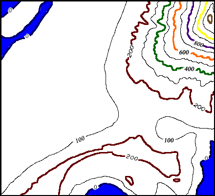

press "shift" to zoom in . . . . . press "ctrl" to zoom out

Move the image above by clicking and dragging across the image.
Click on the location on this contour map where you think the image at the left was shot.
Where Am I?